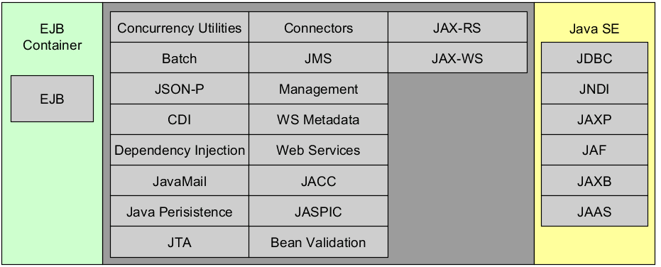

Java EE7 Overview
veverka@itexperts.sk
Module 1
Java EE Platform
- Java EE is a superset of the Java SE platform
- Set of specifications and APIs for building component-based multi-tier applications
- Components are deployed in containers, which provide infrastructure and offer a series of services
- Components are running within managed environment.
- Developed through the Java Community Process (JCP)
Java EE History
- J2EE 1.2 10 Specs Dec. 1999, Enterprise Applications
- J2EE 1.3 13 Specs Sep. 2001, Robust, Scalable
- J2EE 1.4 20 Specs Nov. 2003, Web Services
- Java EE 5 23 Specs May. 2006, Ease of Development
- Java EE 6 28 Specs Dec. 2009, Web EoD Profile
- Java EE 7 31 Specs Jun. 2013, Tihgter Integration
- JMS 2.0
- Batch processing
- WebSockets
- JSon-P
Java EE Future
- Java EE 8, estimated ~35 Specs, Q3. 2017
- Improvements
- Support of latest standards like HTTP 2.0
- Improve Ease of development
- Cloud support improvements
- Java SE 9 adaptation
- New specifications
- J-Cache
- Java API for JSON Binding
- Java Configuration
- JEE security API
- MVC 1.0
Java EE Application Model
- Distributed multi-tiered application model
- Client-tier components run on the client machine
- Web-tier and Business-tier components run on Java EE server
- Enterprise information system -tier software runs on EIS server
Java EE Application Model
Java EE Components
- Java EE Component is a self-contained functional software unit that is assembled into a Java EE application with related classes and files that communicates with other components
- Application clients
- Java Beans components
- Batch processing programs
- JavaFX or Swing GUI applications
- Web application components
- Java Servlets, Servlet Filters, Java Server Pages, Java Server Faces
- Enterprise application components
- EJB Session Beans, JPA Entities, Message Driven Beans
- Scheduled tasks, Batch jobs
Java EE Containers
-
Java EE Containers are a interface between a component and the low-level platform-specific functionality.
Each container has a specific role, supports a set of APIs, and offers services to components.
- Enterprise Java Beans (EJB) container
- Manages the execution of enterprise beans for Java EE applications. Enterprise beans and their container run on the Java EE server.
- Web container
- Manages the execution of web pages, servlets, and some EJB components for Java EE applications. Web components and their container run on the Java EE server.
- Application client container
- Manages the execution of application client components. Application clients and their container run on the client.
Java EE Component Packaging (1)
- Components must be packaged in order to be deployed in a container
- Java EE defines several package formats based on common JAR
- Components can be packaged along with deployment descriptors (meta-data)
- XML deployment descriptor
- Java Annotations (preferred)
Java EE Component Packaging (2)
-
EJB Module – contains Session and Message Driven Beans.
It contains an optional
META-INF/ejb-jar.xml deployment descriptor.
All packaged in file with jar extension.
-
Web Application Module - contains servlets, JSPs, JSF pages, HTML, CSS, web services and EJB Lite beans.
It contains an optional
WEB-INF/web.xml deployment descriptor.
All packaged in file with war extension.
-
Enterprise Application Module - can contain zero or more web application modules, zero or more EJB modules,
and other common or external libraries. It contains an optional
META-INF/application.xml deployment descriptor.
All packaged in file with ear extension.
-
Application Client Module - contains Java classes and other resource files packaged in jar file
Java EE Component Packaging (3)
Java EE Component Packaging (4)
- From EJB 3.1 on you can package EJB beans into WAR archive
- EJB classes come into
WEB-INF/classes directory
- Optional
ejb-jar.xml descriptor come into WEB-INF directory
Java EE APIs in the Web Container
Java EE APIs in the EJB Container

Java EE APIs in the App Client Container
Java EE application servers
- Java EE servers
- RedHat / JBoss EAP $$$ / WildFly free
- IBM WebSphere Application Server $$$
- Oracle WebLogic Server $$$
- Oracle GlassFish Server free
- Apache Geronimo free
- OW2 JOnAS free
- SAP, Fujitsu, NEC, TmaxSoft, Apusic $$$
- Apache TomEE (JEE7 Web Profile) free
- Apache Tomcat – a subset of Java EE
- Only the web part of Java EE; Simpler to use free
JEE Application Server offers
- Hosting and isolation for your (web) applications
- Hot re-deployment without server restart
- HTTP server (web, web services), CORBA server
- Multi-threading and massively concurrent environment
- Each HTTP/CORBA request served in a separate Thread
- DB connection management, pooling, monitoring
JEE Application Server offers
- Transactions (incl. distributed XA over multiple Dbs)
- Asynchronous task execution (message queue, JMS)
- Centralized logging and monitoring
- Authentication and authorization (based on roles)
- Clustering and replication for your components
- Instantiation and dependency injection for your components
Java EE Application Clustering